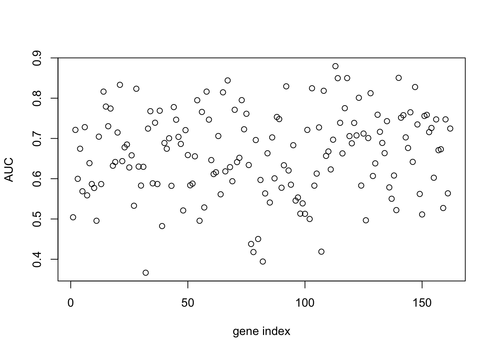

4 Supervised learning
Supervised learning refers to the general task of inferring functions from a labelled set of data. This labelled data consists of a matched pair of observations \(\{\mathbf{X},\mathbf{y}\}\), where \(\mathbf{X}\) usually denotes a matrix of (real-valued) explanatory variables (the input variables), and \(\mathbf{y} = (y_1,\ldots,y_n)^\top\) denotes a vector of observations for a variable of interest (the output variable). Depending on the nature of the output variable, supervised learning is split into regression and classification tasks.
Within a regression setting, we aim to identify how the input variables map to the continuous-valued output variables. A simple example would involved measuring the population size of a bacterial culture, \(\mathbf{y} = (N_1,\ldots,N_n)^\top\), at a set of time points, \(\mathbf{X} = (t_1,\ldots,t_n)^\top\), and learning the function that maps from \(\mathbf{X}\) to \(\mathbf{y}\). Doing so should reveal something about the physical nature of the system, as well as allow us to predict the output variable, \(\mathbf{y}^*\), for a new set of times, \(\mathbf{X}^*\).
Classification algorithms, on the other hand, deal with discrete-valued outputs. Here each observation in \(\mathbf{y}\) can take on only a finite number of values. For example, we may have a measurment that indicates “infected” versus “uninfected”, which can be represented by binary values \(y_i \in [0,1]\), but more generally have data that falls into \(K\) classes e.g., “group 1” through to “group K”. As with regression, the aim is to identify how a potentially continuous-valued input variables maps to a discrete set of class labels, and ultimately, assign labels to a new set of data. Notable examples would be to identify how the expression of particular set of marker genes are predictive of a discrete phenotype.
Although throughout this chapter we assume that input variables are continuous in nature, input variables can be discrete, or a variety of other types including graphs and strings.
In section 4.1 we briefly recap linear regression, and introduce nonlinear approaches to regression based on Gaussian processes. We demonstrate the use of regression to predict gene expression values as a function of time, and how this can be used to inform us about the nature of the data. In section 4.2 we introduce a variety of classification algorithms, starting with logistic regression (section 4), and demonstrate how such approaches can be used to predict pathogen infection status in Arabidopsis thaliana. By doing so we identify key marker genes indicative of pathogen growth. Finally, we note the limitations of linear classification algorithms, and introduce nonlinear approaches based on Gaussian processes (section 4.2.2).
4.1 Regression
In this section, we will make use of an existing dataset which captures the gene expression levels in the model plant Arabidopsis thaliana following innoculation with Botrytis cinerea (Windram et al. 2012), a necrotrophic pathogen considered to be the second most important fungal plant pathogen due to its ability to cause disease in a range of plants. The dataset is a time series measuring the gene expression in Arabidopsis leaves following inoculation with Botrytis cinerea over a \(48\) hour time window.
The dataset is available from GEO (GSE39597) but with a pre-processed version found in the data folder. This processed data contains the expression levels of a set of marker genes in tab delimited format. The fist row contains gene IDs for the variables \(163\) marker genes. Column \(2\) contains the time points of observations, with column \(3\) containing a binary indication of infection status, evalutated according to the prescence of Botrytis cinerea Tubulin protein. All subsequent columns indicate (\(\log_2\)) normalised Arabidopsis gene expression values from microarrays (V4 TAIR V9 spotted cDNA array). The expression dataset itself contains two time series: the first \(24\) observations represent measurements of Arabidopsis gene expression in a control experiment (uninfected), from \(2h\) through \(48h\) at \(2\)-hourly intervals, and therefore capture dynamic aspects of plant behaviour, including circadian rhythms; the second set of \(24\) observations represents an infected dataset, again commencing \(2h\) after inoculation with Botyris cinerea through to \(48h\).
Within this section our output variable will typically be the expression level of a particular gene of interest, denoted \(\mathbf{y} =(y_1,\ldots,y_n)^\top\), with the explanatory variable being time, \(\mathbf{X} =(t_1,\ldots,t_n)^\top\). We can read the dataset into {R} as follows:
D <- read.csv(file = "data/Arabidopsis/Arabidopsis_Botrytis_transpose_3.csv", header = TRUE, sep = ",", row.names=1)We can also extract out the names of variables, and the unique vector of measurment times:
genenames <- colnames(D)
Xs <- D$Time[1:24]Exercise 3.1. Plot the gene expression profiles to familiarise yourself with the data.
4.1.1 Linear regression
Recall that one of the simplest forms of regression - linear regression - assumes that the variable of interest, \(y\), depends on an explanatory variable, \(x\), via:
\(y = mx + c.\)
For a typical set of data, we have a vector of observations, \(\mathbf{y} = (y_1,y_2,\ldots,y_n)\) with a corresponding set of explanatory variables. For now we can assume that the explanatory variable is scalar, for example time in hours, such that we have a set of observations, \(\mathbf{X} = (t_1,t_2,\ldots,t_n)\). Using linear regression we aim to infer the parameters \(m\) and \(c\), which will tell us something about the relationship between the two variables, and allow us to make predictions at a new set of locations, \(\mathbf{X}*\).
Within {R}, linear regression can be implemented via the {lm} function. In the example below, we perform linear regression for the gene expression of AT2G28890 as a function of time, using the infection time series only (hence we use only the first \(24\) datapoints):
lm(AT2G28890~Time, data = D[25:nrow(D),])##
## Call:
## lm(formula = AT2G28890 ~ Time, data = D[25:nrow(D), ])
##
## Coefficients:
## (Intercept) Time
## 10.14010 -0.04997Linear regression is also implemented within the {caret} package, allowing us to make use of its various other utilities. In fact, within {caret}, linear regression is performed by calling the function {lm}. In the example, below, we perform linear regression for AT2G28890, and calculate the predict the expression pattern for that gene using the {predict} function:
library(caret)## Loading required package: lattice## Loading required package: ggplot2library(mlbench)
set.seed(1)
geneindex <- which(genenames=="AT2G28890")
lrfit <- train(y~., data=data.frame(x=Xs,y=D[25:nrow(D),geneindex]), method = "lm")
predictedValues<-predict(lrfit)A summary of the model, including parameters, can be printed out to screen using the {summary} function:
summary(lrfit)##
## Call:
## lm(formula = .outcome ~ ., data = dat)
##
## Residuals:
## Min 1Q Median 3Q Max
## -0.77349 -0.17045 -0.01839 0.15795 0.63098
##
## Coefficients:
## Estimate Std. Error t value Pr(>|t|)
## (Intercept) 10.14010 0.13975 72.56 < 2e-16 ***
## x -0.04997 0.00489 -10.22 8.14e-10 ***
## ---
## Signif. codes: 0 '***' 0.001 '**' 0.01 '*' 0.05 '.' 0.1 ' ' 1
##
## Residual standard error: 0.3317 on 22 degrees of freedom
## Multiple R-squared: 0.826, Adjusted R-squared: 0.8181
## F-statistic: 104.4 on 1 and 22 DF, p-value: 8.136e-10Finally, we can fit a linear model to the control dataset, and plot the inferred results alongside the observation data:
lrfit2 <- train(y~., data=data.frame(x=Xs,y=D[1:24,geneindex]), method = "lm")
predictedValues2<-predict(lrfit2)
plot(Xs,D[25:nrow(D),geneindex],type="p",col="black",ylim=c(min(D[,geneindex])-0.2, max(D[,geneindex]+0.2)),main=genenames[geneindex])
points(Xs,D[1:24,geneindex],type="p",col="red")
points(Xs,predictedValues,type="l",col="black")
points(Xs,predictedValues2,type="l",col="red")
Whilst the model appeared to do resonably well at capturing the general trends in the datset, if we look at the control data (in red), you may notice that, visually, there appears to be more structure to the data than indicated by the model fit. Indeed, if we look AT2G28890 up on CircadianNET, we will see it is likely circadian in nature (\(p<5\times10^{-5}\)).
4.1.2 Polynomial regression
In general, linear models will not be appropriate for a large variety of datasets, particularly when the variables of interest are nonlinear. We can instead try to fit more complex models, such as a quadratic functions, which have the following form:
\(y = m_1 x + m_2 x^2 + c,\)
where \(m = [m_1,m_2,c]\) represent the parameters we’re interested in inferring. An \(n\)th-order polynomial has the form:
\(y = \sum_{i=1}^{n} m_i x^i + c.\)
where \(m = [m_1,\ldots,m_n,c]\) are the free parameters. Within {R} we can infer more complex polynomials to the data using the {lm} package by calling the {poly} function when specififying the symbolic model. In the example below we fit a \(3\)rd order polynomial (the order of the polynomial is specified via the {degree} variable):
lrfit3 <- lm(y~poly(x,degree=3), data=data.frame(x=D[1:24,1],y=D[1:24,geneindex]))We can do this within {caret}. In the snippet, below, we fit \(3\)rd order polynomials to the control and infected datasets, and plot the fits alongside the data:
lrfit3 <- train(y~poly(x,degree=3), data=data.frame(x=D[1:24,1],y=D[1:24,geneindex]), method = "lm")
lrfit4 <- train(y~poly(x,degree=3), data=data.frame(x=D[25:nrow(D),1],y=D[25:nrow(D),geneindex]), method = "lm")
plot(Xs,D[25:nrow(D),geneindex],type="p",col="black",ylim=c(min(D[,geneindex])-0.2, max(D[,geneindex]+0.2)),main=genenames[geneindex])
points(Xs,D[1:24,geneindex],type="p",col="red")
lines(Xs,fitted(lrfit3),type="l",col="red")
lines(Xs,fitted(lrfit4),type="l",col="black")
Note that, by eye, the fit appears to be a little better than for the linear regression model … maybe! We can quantify the accuracy of the models by looking at the root-mean-square error (RMSE) on hold-out data, defined as:
\(\mbox{RMSE} = \sqrt{\sum_{i=1}^n (\hat{y_i}-y_i)^2/n}\)
where \(\hat{y_i}\) is the predicted value and \(y_i\) the observed value of the \(i\)th datapoint. In previous sections we explicitly specified a set of training data and hold-out data (test data). If we do not specify this in {caret}, the data is split by default values.
Exercise 3.4. What happens if we fit a much higher order polynomial? Try fitting a polynomial with degree = 20 and plotting the result. The fit appears to match much more closely to the observed data. However, intuitively we feel this is wrong. Whilst it may be possible that the data was generated by a polynomial, it’s far more likely that we are overfitting the data. We can evaluate how good the model really is by holding some data back and looking at the RMSE from bootstrapped samples. How does the RMSE compare? Which model seems to be best?
4.1.3 Distributions of fits
In the previous section we explored fitting polynomials to data. Recall that we can fit a \(4\)th order polynomial to the control datasets as follows:
lrfit3 <- lm(y~poly(x,degree=4), data=data.frame(x=D[1:24,1],y=D[1:24,geneindex]))
plot(Xs,D[1:24,geneindex],type="p",col="black",ylim=c(min(D[,geneindex])-0.2, max(D[,geneindex]+0.2)),main=genenames[geneindex])
lines(Xs,fitted(lrfit3),type="l",col="red")
It looks reasonable. But how does it compare to the following shown in blue?
lrfit4 <- lrfit3
lrfit4$coefficients <- lrfit4$coefficients + 0.1*matrix(rnorm(length(lrfit4$coefficients)),length(lrfit4$coefficients));
pred1<-predict(lrfit4, data=data.frame(x=D[1:24,1],y=D[1:24,geneindex]))
plot(Xs,D[1:24,geneindex],type="p",col="black",ylim=c(min(D[,geneindex])-0.2, max(D[,geneindex]+0.2)),main=genenames[geneindex])
lines(Xs,fitted(lrfit3),type="l",col="red")
lines(Xs,pred1,type="l",col="blue")
Our new fit was generated by slightly tweaking the optimised parameters via the addition of a random variable. We can see that the new fit is almost as good, and will have a very similar SSE. In general, inferring a single fit to a model is prone to overfitting. A much better approach is to instead fit a distribution over fits. We can generate samples from a linear model using the {coef} function. To do so we must use the {lm} function directly, and not via the {caret} package.
library("arm")## Loading required package: MASS## Loading required package: Matrix## Loading required package: lme4##
## arm (Version 1.9-3, built: 2016-11-21)## Working directory is /Users/christopher_penfold/Desktop/MLCourse/intro-machine-learninglrfit4 <- lm(y~poly(x,degree=4), data=data.frame(x=D[1:24,1],y=D[1:24,geneindex]))
simulate <- coef(sim(lrfit4))
paramsamp <- head(simulate,10)This will sample model parameters that are likely to be explaining the dataset, in this case we have produced \(10\) different set of sample parameters. In the code, below, we plot these \(10\) sample polynomials:
plot(Xs,D[1:24,geneindex],type="p",col="black",ylim=c(min(D[,geneindex])-0.2, max(D[,geneindex]+0.2)),main=genenames[geneindex])
for (i in c(1,2,3,4,5,6,7,8,9,10)){
lrfit4$coefficients <- paramsamp[i,]
pred1<-predict(lrfit4, data=data.frame(x=D[1:24,1],y=D[1:24,geneindex]))
lines(Xs,pred1,type="l",col="red")
}
Alternatively, we can visualise the confidence bounds easy using:
lrfit4 <- lm(y~poly(x,degree=4), data=data.frame(x=D[1:24,1],y=D[1:24,geneindex]))
pred1<-predict(lrfit4, interval="predict")## Warning in predict.lm(lrfit4, interval = "predict"): predictions on current data refer to _future_ responsesplot(Xs,D[1:24,geneindex],type="p",col="black",ylim=c(min(D[,geneindex])-0.2, max(D[,geneindex]+0.2)),main=genenames[geneindex])
lines(Xs,pred1[,1],type="l",col="red")
lines(Xs,pred1[,2],type="l",col="red")
lines(Xs,pred1[,3],type="l",col="red")
4.1.4 Gaussian process regression
In the previous section we briefly explored fitting multiple polynomials to our data. However, we still had to decide on the order of the polynomial beforehand. A far more powerful approach is Gaussian processes (GP) regression (Williams and Rasmussen 2006). Gaussian process regression represent a Bayesian nonparametric approach to regression capable of inferring nonlinear functions from a set of observations. Within a GP regression setting we assume the following model for the data:
\(y = f(\mathbf{x})\)
where \(f(\cdot)\) represents an unknown nonlinear function.
Formerly, Gaussian processes are defined as a collections of random variables, any finite subset of which are jointly Gaussian distributed (Williams and Rasmussen 2006). The significance of this might not be immediately clear. Another way to think of GPs is as an infinite dimensional extension to the standard multivariate normal distribution. In the same way as a Gaussian distribution is defined by its mean, \(\mu\), and covaraiance matrix, \(\mathbf{K}\), a Gaussian processes is completely defined by its mean function, \(m(x)\), and covariance function, \((x,x^\prime)\), and we use the notation \(f(x) \sim \mathcal{GP}(m(x), k(x,x^\prime))\) to denote that \(f(x)\) is drawn from a Gaussian process prior.
As it is an infinite dimensional object, dealing directly with the GP prior is not feasible. However, we can make use of a particular useful property of a Gaussian distributions to sidestep this. Notably, the integral of a Gaussian distribution is itself a Gaussian distribution. Gaussian processes share this property, which means that if we are interested only in the distribution of the function at a set of locations, \(\mathbf{x}\) and \(\mathbf{x}^*\) we can (analytically) integrate out the effect at all other locations. The resultant prior distribution is, of course, Gaussian:
\[ \begin{eqnarray*} \begin{pmatrix}\mathbf{y}^\top\\ \mathbf{y^*}^\top \end{pmatrix} & \sim & N\left(\left[\begin{array}{c} \mathbf{0}\\ \mathbf{0}\\ \end{array}\right],\left[\begin{array}{ccc} K(\mathbf{x},\mathbf{x}) & K(\mathbf{x},\mathbf{x}^*)\\ K(\mathbf{x}^*,\mathbf{x}) & K(\mathbf{x}^*,\mathbf{x}^*) \\ \end{array}\right)\right] \end{eqnarray*} \] Quite often we deal with noisy data. That is:
\(y = f(\mathbf{x}) + \varepsilon\).
where \(\varepsilon\) represents independent noise. In this setting we are interested in inferring the function \(\mathbf{f}^*\) at the \(\mathbf{X}*\) i.e., not the noisy function \(\mathbf{y}^*\). To do so we note that we have the following joint distribution:
\[ \begin{eqnarray*} \begin{pmatrix}\mathbf{y}^\top\\ \mathbf{f^*}^\top \end{pmatrix} & \sim & N\left(\left[\begin{array}{c} \mathbf{0}\\ \mathbf{0}\\ \end{array}\right],\left[\begin{array}{ccc} K(\mathbf{x},\mathbf{x})+\sigma_n^2 \mathbb{I} & K(\mathbf{x},\mathbf{x}^*)\\ K(\mathbf{x}^*,\mathbf{x}) & K(\mathbf{x}^*,\mathbf{x}^*) \\ \end{array}\right)\right] \end{eqnarray*} \]
In the examples below we start by sampling from a GP prior as a way of illustrating what it is they’re doing. We first require a number of packages.
require(MASS)
require(plyr)## Loading required package: plyrrequire(reshape2)## Loading required package: reshape2require(ggplot2)Recall that the GP is completely defined by its mean function and covariance function. We can assume a zero-mean function without loss of generality. Until this point, we have not said much about what the covariance function is. In general, the covariance function encodes all information about the type of functions we’re interested in. The most commonly used covariance function is the squared exponential covariance function:
\(C(x,x^\prime) = \sigma^2 \exp\biggl{(}\frac{(x-x^\prime)^2}{2l^2}\biggr{)}\).
This encodes for smooth functions (formerly, it specifies funtions that are infinitely differentiable), and has two hyperparameters: a length-scale hyperparameter \(l\), which defines how fast the functions change over the input space (in our examples this would time), and a process variance hyperparameter, \(\sigma\), which encodes the amplitude of the function (in our examples this represents the gene expression levels). In the snippet of code, below, we implement a squared exponential covariance function
covSE <- function(X1,X2,l=1,sig=1) {
K <- matrix(rep(0, length(X1)*length(X2)), nrow=length(X1))
for (i in 1:nrow(K)) {
for (j in 1:ncol(K)) {
K[i,j] <- sig^2*exp(-0.5*(abs(X1[i]-X2[j]))^2 /l^2)
}
}
return(K)
}To get an idea of what this means, we can generate samples from the GP prior at a set of defined positions along \(x\). Due to the nature of GPs this is Gaussian distributed:
x.star <- seq(-5,5,len=500) ####Define a set of points at which to evaluate the functions
sigma <- covSE(x.star,x.star) ###Evaluate the covariance function at those locations, to give the covariance matrix.
y1 <- mvrnorm(1, rep(0, length(x.star)), sigma)
y2 <- mvrnorm(1, rep(0, length(x.star)), sigma)
y3 <- mvrnorm(1, rep(0, length(x.star)), sigma)
plot(y1,type = 'l',ylim=c(min(y1,y2,y3),max(y1,y2,y3)))
lines(y2)
lines(y3)
When we specify a GP, we are essentially encoding a distribution over a whole range of functions. Exactly how those functions behave depends upon the choice of covariance function and the hyperparameters. To get a feel for this, try changing the hyperparameters in the above code. A variety of other covariance functions exist, and can be found, with examples in the Kernel Cookbook.
Exercise 3.4 (optional): Try implementing another covariance function from the Kernel Cookbook and generating samples from the GP prior.
4.1.4.1 Inference with GPs
We can generate samples from the GP prior, but what about inference? In linear regression we aimed to infer the parameters, \(m\) and \(a\). What is the GP doing? Essentially, it’s representing the (unknown) function in terms of the observed data and the hyperparameters. Another way to look at it, is that we have specified a prior distribution (encoding for all functions of a particular kind) over the input space; during inference we give greater weight to a subset of those functions that pass through our observed datapoints, essentially pinning in a subset of the prior functions. If we assume some noise in the observations, we instead give greater weight to prior functions passing close to the observations.
For the purpose of inference, we typically have a set of observations, \(\mathbf{X}\), and outputs \(\mathbf{y}\), and are interested in inferring the values, \(\mathbf{f}^*\), at new set of test locations, \(\mathbf{X}^*\). We can infer a posterior distribution for \(\mathbf{f}^*\) using Bayes’ rule:
\(p(\mathbf{f}^* | \mathbf{X}, \mathbf{y}, \mathbf{X}^*) = \frac{p(\mathbf{y}, \mathbf{f}^* | \mathbf{X}, \mathbf{X}^*)}{p(\mathbf{y}|\mathbf{X})}\)
A key advantage of GPs is the preditive distribution is analytically tractible and has the following Gaussian form:
\(\mathbf{f}^* | \mathbf{x}, \mathbf{y}, \mathbf{x}* \sim \mathcal{N}(\hat{f}^*,\hat{K}^*)\)
where,
\(\hat{f}^* = K(\mathbf{x},\mathbf{x}^*)^\top(K(\mathbf{x},\mathbf{x})+\sigma^2\mathbb{I})^{-1} \mathbf{y}\),
\(\hat{K}^* = K(\mathbf{x}^*,\mathbf{x}^*)^{-1} - K(\mathbf{x},\mathbf{x}^*)^\top (K(\mathbf{x},\mathbf{x})+\sigma^2\mathbb{I})^{-1} K(\mathbf{x},\mathbf{x}^*)\).
To demonstrate this, let’s assume we have an unknown function. In our example, for data generation, we will assume this to be \(y = \sin(x)\) as an illustrative example of a nonlinear function (although we know this, the GP will only ever see samples from this function, not the function itself). We might have some observations from this function at a set of input positions \(x\) e.g., one observation at \(x=-2\):
f <- data.frame(x=c(-2),
y=sin(c(-2)))We can infer a posterior GP (and plot this against the true underlying function in red):
x <- f$x
k.xx <- covSE(x,x)
k.xxs <- covSE(x,x.star)
k.xsx <- covSE(x.star,x)
k.xsxs <- covSE(x.star,x.star)
f.star.bar <- k.xsx%*%solve(k.xx)%*%f$y ###Mean
cov.f.star <- k.xsxs - k.xsx%*%solve(k.xx)%*%k.xxs ###Var
plot(x.star,sin(x.star),type = 'l',col="red",ylim=c(-2.2, 2.2))
points(f,type='o')
lines(x.star,f.star.bar,type = 'l')
lines(x.star,f.star.bar+2*sqrt(diag(cov.f.star)),type = 'l',pch=22, lty=2, col="black")
lines(x.star,f.star.bar-2*sqrt(diag(cov.f.star)),type = 'l',pch=22, lty=2, col="black")
Of course the fit is not particularly good, but we only had one observation, so this is not surprising. Crucially, we can see that the GP encodes the idea of uncertainty. Although the model fit is not particularly good, we can see exactly where it is no good.
Exercise 3.5 (optional): Try plotting some sample function from the posterior GP. Hint: these will be Gaussian distributed with mean {f.star.bar} and covariance {cov.f.star}.
Let’s start by adding more observations. Here’s what the posterior fit looks like if we include 4 observations (at \(x \in [-4,-2,0,1]\)):
f <- data.frame(x=c(-4,-2,0,1),
y=sin(c(-4,-2,0,1)))
x <- f$x
k.xx <- covSE(x,x)
k.xxs <- covSE(x,x.star)
k.xsx <- covSE(x.star,x)
k.xsxs <- covSE(x.star,x.star)
f.star.bar <- k.xsx%*%solve(k.xx)%*%f$y ###Mean
cov.f.star <- k.xsxs - k.xsx%*%solve(k.xx)%*%k.xxs ###Var
plot(x.star,sin(x.star),type = 'l',col="red",ylim=c(-2.2, 2.2))
points(f,type='o')
lines(x.star,f.star.bar,type = 'l')
lines(x.star,f.star.bar+2*sqrt(diag(cov.f.star)),type = 'l',pch=22, lty=2, col="black")
lines(x.star,f.star.bar-2*sqrt(diag(cov.f.star)),type = 'l',pch=22, lty=2, col="black")
And with \(7\) observations:
f <- data.frame(x=c(-4,-3,-2,-1,0,1,2),
y=sin(c(-4,-3,-2,-1,0,1,2)))
x <- f$x
k.xx <- covSE(x,x)
k.xxs <- covSE(x,x.star)
k.xsx <- covSE(x.star,x)
k.xsxs <- covSE(x.star,x.star)
f.star.bar <- k.xsx%*%solve(k.xx)%*%f$y ###Mean
cov.f.star <- k.xsxs - k.xsx%*%solve(k.xx)%*%k.xxs ###Var
plot(x.star,sin(x.star),type = 'l',col="red",ylim=c(-2.2, 2.2))
points(f,type='o')
lines(x.star,f.star.bar,type = 'l')
lines(x.star,f.star.bar+2*sqrt(diag(cov.f.star)),type = 'l',pch=22, lty=2, col="black")
lines(x.star,f.star.bar-2*sqrt(diag(cov.f.star)),type = 'l',pch=22, lty=2, col="black")
We can see that even with only \(7\) observations the posterior GP has begun to resemble the true (nonlinear) function very well: over most of the \(x\)-axis the mean of the GP lies very close to the true function and, perhaps more importantly, we continue to have an treatment for the uncertainty.
4.1.4.2 Marginal Likelihood and Optimisation of Hyperparameters
Another key aspect of GP regression is the ability to analytically evaluate the marginal likelihood, otherwise referred to as the “model evidence”. The marginal likelihood is the probability of generating the observed datasets under the specified prior. For a GP this would be the probability of seeing the observatins \(\mathbf{x}\) under a Gaussian distribtion, \(\mathcal{N}(\mathbf{0},K(\mathbf{x},\mathbf{x}))\). The log marginal likelihood for a noise-free model is:
\(\ln p(\mathbf{y}|\mathbf{x}) = -\frac{1}{2}\mathbf{y}^\top [K(\mathbf{x},\mathbf{x})+\sigma_n^2\mathbb{I}]^{-1} \mathbf{y} -\frac{1}{2} \ln |K(\mathbf{x},\mathbf{x})+\sigma_n^2\mathbb{I}| - \frac{n}{2}\ln 2\pi\)
We calculate this in the snippet of code, below, hard-coding a small amount of Gaussian noise:
calcML <- function(f,l=1,sig=1) {
f2 <- t(f)
yt <- f2[2,]
y <- f[,2]
K <- covSE(f[,1],f[,1],l,sig)
ML <- -0.5*yt%*%ginv(K+0.1^2*diag(length(y)))%*%y -0.5*log(det(K)) -(length(f[,1])/2)*log(2*pi);
return(ML)
}The ability to calculate the marginal likelihood gives us a way to automatically select the hyperparameters. We can increment hyperparameters over a range of values, and choose the values that yield the greatest marginal likelihood. In the example, below, we increment both the length-scale and process variance hyperparameter:
library(plot3D)
par <- seq(.1,10,by=0.1)
ML <- matrix(rep(0, length(par)^2), nrow=length(par), ncol=length(par))
for(i in 1:length(par)) {
for(j in 1:length(par)) {
ML[i,j] <- calcML(f,par[i],par[j])
}
}
persp3D(z = ML,theta = 120)
ind<-which(ML==max(ML), arr.ind=TRUE)
print(c("length-scale", par[ind[1]]))## [1] "length-scale" "2.4"print(c("process variance", par[ind[2]]))## [1] "process variance" "1.3"Here we have performed a grid search to identify the optimal hyperparameters. In actuality, the derivative of the marginal likelihood with respect to the hyperparameters is analytically tractable, allowing us to optimise using gradient search algorithms.
Exercise 3.6: Try fitting plotting the GP using the optimised hyperparameter values.
Exercise 3.7: Now try fitting a Gaussian process to one of the gene expression profiles in the Botrytis dataset. Hint: You may need to normalise the time axis. Since this data also contains a high level of noise you will also need to use a covariance function/ML calculation that incorporates noise. The snippet of code, below, does this, with the noise now representing a \(3\)rd hyperparameter.
covSEn <- function(X1,X2,l=1,sig=1,sigman=0.1) {
K <- matrix(rep(0, length(X1)*length(X2)), nrow=length(X1))
for (i in 1:nrow(K)) {
for (j in 1:ncol(K)) {
K[i,j] <- sig^2*exp(-0.5*(abs(X1[i]-X2[j]))^2 /l^2)
if (i==j){
K[i,j] <- K[i,j] + sigman^2
}
}
}
return(K)
}calcMLn <- function(f,l=1,sig=1,sigman=0.1) {
f2 <- t(f)
yt <- f2[2,]
y <- f[,2]
K <- covSE(f[,1],f[,1],l,sig)
ML <- -0.5*yt%*%ginv(K+diag(length(y))*sigman^2)%*%y -0.5*log(det(K+diag(length(y))*sigman^2)) -(length(f[,1])/2)*log(2*pi);
return(ML)
}4.1.4.3 Model Selection
As well as being a useful criterion for selecting hyperparameters, the marginal likelihood can be used as a basis for selecting models. For example, we might be interested in comparing how well we fit the data using two different covariance functions: a squared exponential covariance function (model 1, \(M_1\)) versus a periodic covariance function (model 2, \(M_2\)). By taking the ratio of the marginal likelihoods we calculate the Bayes’ Factor (BF) which allows us to determine which model is the best:
\(\mbox{BF} = \frac{ML(M_1)}{ML(M_2)}\).
High values for the BF indicate strong evidence for \(M_1\) over \(M_2\), whilst low values would indicate the contrary.
4.1.4.4 Advanced application 1: differential expression of time series
Differential expression analysis is concerned with identifying if two sets of data are significantly different from one another. For example, if we measured the expression level of a gene in two different conditions (control versus treatment), you could use an appropriate statistical test to determine whether the expression of that gene had been affected by the treatment. Most statistical tests used for this are not appropriate when dealing with time series data (illustrated in Figure 4.1).

Figure 4.1: Differential expression analysis for time series. Here we have two time series with very different behaviour (right). However, as a whole the mean and variance of the time series is identical (left) and the datasets are not differentially expressed using a t-test (p<0.9901)
Gaussian processes regression represents a useful way of modelling time series, and can therefore be used as a basis for detecting differential expression in time series. To do so we write down two competing modes: (i) the two time series are differentially expressed, and are therefore best described by two independent GPs; (ii) the two time series are noisy observations from an identical underlying process, and are therefore best described by a single joint GP.
Exercise 3.8 (optional): Write a function for determining differential expression for two genes. Hint: you will need to fit \(3\) GPs: one to the mock, one to the control, and one to the union of mock and control. You can use the Bayes Factor to determine if the gene is differentially expressed.
4.1.4.5 Advanced Application 2: Timing of differential expression
Nonlinear Bayesian regression represent a powerful tool for modelling time series. In the previous section we have shown how GPs can be used to model if two time series are differentially expressed. More advanced models using GPs aim to identify when two (or more) time series diverge (Stegle et al. 2010,Yang et al. (2016),C. A. Penfold et al. (2017)). The DEtime package (Yang et al. 2016) is one way for doing so.
###install.packages("devtools")
library(devtools)
###install_github("ManchesterBioinference/DEtime")
###import(DEtime)
library(DEtime)Within {DEtime}, we can call the function {DEtime_rank} to calculate marginal likelihood ratios for two time series, similar to our application in the previous section. Note that here the hyperparameters are optimised by gradient search rather than grid searches.
res_rank <- DEtime_rank(ControlTimes = Xs, ControlData = D[1:24,3], PerturbedTimes = Xs, PerturbedData = D[25:48,3], savefile=TRUE)## [1] "gene IDs are not provided. Numbers are used instead"
## rank list saved in DEtime_rank.txt#idx <- which(res_rank[,2]>1)For genes that are DE, we identify the timing of divergence between two time series using the function {DEtime_infer}.
res <- DEtime_infer(ControlTimes = Xs, ControlData = D[1:24,3], PerturbedTimes = Xs, PerturbedData = D[25:48,3])## gene IDs are not provided. Numbers are used instead.
## Testing perturbation time points are not provided. Default one is used.
## gene 1 is done
## DEtime inference is done.
## Please use print_DEtime or plot_DEtime to view the results.print_DEtime## function (DEtimeOutput)
## {
## cat("Perturbation point inference results from DEtime package: \n")
## cat("==========================================================\n")
## print(DEtimeOutput$result, sep = "\t", zero.print = ".")
## cat("==========================================================\n")
## }
## <environment: namespace:DEtime>plot_DEtime(res)## All genes will be plotted
## 1 is plottedWe can do it for all genes using the example below. By doing so, we can plot a histogram of the times of divergence, shedding light on the temporal progression of the infection process.
res <- DEtime_infer(ControlTimes = Xs, ControlData = t(D[1:24,]), PerturbedTimes = Xs, PerturbedData = t(D[25:48,]))## ControlData is accepted
## PerturbedData is accepted
## gene IDs are not provided. Numbers are used instead.
## Testing perturbation time points are not provided. Default one is used.
## gene 1 is done
## gene 2 is done
## gene 3 is done
## gene 4 is done
## gene 5 is done
## gene 6 is done
## gene 7 is done
## gene 8 is done
## gene 9 is done
## gene 10 is done
## gene 11 is done
## gene 12 is done
## gene 13 is done
## gene 14 is done
## gene 15 is done
## gene 16 is done
## gene 17 is done
## gene 18 is done
## gene 19 is done
## gene 20 is done
## gene 21 is done
## gene 22 is done
## gene 23 is done
## gene 24 is done
## gene 25 is done
## gene 26 is done
## gene 27 is done
## gene 28 is done
## gene 29 is done
## gene 30 is done
## gene 31 is done
## gene 32 is done
## gene 33 is done
## gene 34 is done
## gene 35 is done
## gene 36 is done
## gene 37 is done
## gene 38 is done
## gene 39 is done
## gene 40 is done
## gene 41 is done
## gene 42 is done
## gene 43 is done
## gene 44 is done
## gene 45 is done
## gene 46 is done
## gene 47 is done
## gene 48 is done
## gene 49 is done
## gene 50 is done
## gene 51 is done
## gene 52 is done
## gene 53 is done
## gene 54 is done
## gene 55 is done
## gene 56 is done
## gene 57 is done
## gene 58 is done
## gene 59 is done
## gene 60 is done
## gene 61 is done
## gene 62 is done
## gene 63 is done
## gene 64 is done
## gene 65 is done
## gene 66 is done
## gene 67 is done
## gene 68 is done
## gene 69 is done
## gene 70 is done
## gene 71 is done
## gene 72 is done
## gene 73 is done
## gene 74 is done
## gene 75 is done
## gene 76 is done
## gene 77 is done
## gene 78 is done
## gene 79 is done
## gene 80 is done
## gene 81 is done
## gene 82 is done
## gene 83 is done
## gene 84 is done
## gene 85 is done
## gene 86 is done
## gene 87 is done
## gene 88 is done
## gene 89 is done
## gene 90 is done
## gene 91 is done
## gene 92 is done
## gene 93 is done
## gene 94 is done
## gene 95 is done
## gene 96 is done
## gene 97 is done
## gene 98 is done
## gene 99 is done
## gene 100 is done
## gene 101 is done
## gene 102 is done
## gene 103 is done
## gene 104 is done
## gene 105 is done
## gene 106 is done
## gene 107 is done
## gene 108 is done
## gene 109 is done
## gene 110 is done
## gene 111 is done
## gene 112 is done
## gene 113 is done
## gene 114 is done
## gene 115 is done
## gene 116 is done
## gene 117 is done
## gene 118 is done
## gene 119 is done
## gene 120 is done
## gene 121 is done
## gene 122 is done
## gene 123 is done
## gene 124 is done
## gene 125 is done
## gene 126 is done
## gene 127 is done
## gene 128 is done
## gene 129 is done
## gene 130 is done
## gene 131 is done
## gene 132 is done
## gene 133 is done
## gene 134 is done
## gene 135 is done
## gene 136 is done
## gene 137 is done
## gene 138 is done
## gene 139 is done
## gene 140 is done
## gene 141 is done
## gene 142 is done
## gene 143 is done
## gene 144 is done
## gene 145 is done
## gene 146 is done
## gene 147 is done
## gene 148 is done
## gene 149 is done
## gene 150 is done
## gene 151 is done
## gene 152 is done
## gene 153 is done
## gene 154 is done
## gene 155 is done
## gene 156 is done
## gene 157 is done
## gene 158 is done
## gene 159 is done
## gene 160 is done
## gene 161 is done
## gene 162 is done
## gene 163 is done
## gene 164 is done
## DEtime inference is done.
## Please use print_DEtime or plot_DEtime to view the results.hist(as.numeric(res$result[,2]),breaks=20)
4.1.4.6 Scalability
Whilst GPs represent a powerful approach to nonlinear regression, they do have some limitations. Computationally, GPs do not scale well with the number of observations, and standard GP approaches are not suitable when we have a very large datasets (thousands of observations). To overcome these limitations, approximate approaches to inference with GPs have been developed.
4.2 Classification
Classification algorithms are a supervised learning techniques that assign data to categorical outputs. For example we may have a continuous input variable, \(x\), and want to learn how that variable maps to a discrete valued output, \(y\in [0,1]\), which might represent two distinct phenotypes “infected” versus “uninfected”.
This section is slit as follows in section 4 we introduce logistic regression, a simple classification algorithm based on linear models, and in section @ref(#gp-classification) we demonstrate the use of nonlinear classifiers based on Gaussian process, highlighting when GP classifiers are more appropriate.
4.2.1 Logistic regression
The type of linear regression models we’ve been using up to this point deal with real-valued \(\mathbf{y}\), and are therefore not appropriate for classification. To deal with cases where \(\mathbf{y}\) is a binary outcome, we instead fit a linear model to the logit (natural log) of the log-odds ratio:
\(\ln \biggl{(}\frac{p(x)}{1-p(x)}\biggr{)} = c + m_1 x_1.\)
Although this model is not immediately intuitive, if we solve for \(p(x)\) we get:
\(p(x) = \frac{1}{1+\exp(-c - m_1 x_1)}\).
We have thus specified a function that indicates the probability of success for a given value of \(x\) e.g., \(P(y=1|x)\). Note that in our observation data \(\mathbf{y}\) itself can only take on one of two values. We can think of our data as a being a sample from a Bernoulli trial, and we can therefore write down the likelihood for the observation:
\(\mathcal{L}(c,m_1) = \prod_{i=1}^n p(x_i)^{y_i} (1-p(x_i)^{1-y_i})\).
In general, these models do not admit a closed form solution, but can be solved iteratively via maximum likelihood, that is by finding the values \((c,m_1)\) that return the greatest value of \(\mathcal{L}(c,m_1)\). Within {caret}, logistic regression can applied using the {glm} function.
To illustate this we will again make use of our plant dataset. Recall that the second column represents a binary variable indicative of infection status e.g., population growth of Botrytis cinerea using statistical enrichment of Botrytis Tubulin versus the earliest time point.
In the excercises, below, we will aim to learn a set of markers capable of predicting infection status using logistic regression. To begin with, let’s see if time is informative of infection status:
library(pROC)## Type 'citation("pROC")' for a citation.##
## Attaching package: 'pROC'## The following objects are masked from 'package:stats':
##
## cov, smooth, varlibrary(ROCR)## Loading required package: gplots##
## Attaching package: 'gplots'## The following object is masked from 'package:stats':
##
## lowessoptions(warn=-1)
mod_fit <- train(y ~ ., data=data.frame(x = D$Time, y = as.factor(D$Class)), method="glm", family="binomial")To evaluate the model, we will load in a second (related) dataset, containnig a new set of observations not seen by the model, and predict infection status.
Dpred <- read.csv(file = "data/Arabidopsis/Arabidopsis_Botrytis_pred_transpose_3.csv", header = TRUE, sep = ",", row.names=1)
prob <- predict(mod_fit, newdata=data.frame(x = Dpred$Time, y = as.factor(Dpred$Class)), type="prob")
pred <- prediction(prob$`1`, as.factor(Dpred$Class))To evaluate how well the algorithm has done, we can calculate a variety of summary statistics. For example the number of true positives, true negatives, false positive and false negatives. A useful summary is to plot the ROC curve (false positive rate versus true positive rate) and calculate the area under that curve. For a perfect algorithm, the area under this curve (AUC) will be equal to \(1\), whereas random assignment would give an area of \(0.5\). In the example below, we will calculate the AUC for a logistic regression model:
perf <- performance(pred, measure = "tpr", x.measure = "fpr")
plot(perf)
auc <- performance(pred, measure = "auc")
auc <- auc@y.values[[1]]
auc## [1] 0.6111111Okay, so a score of \(0.61\) is certainly better than random, but not particularly good. This is perhaps not surprising, as half the time series (the control) is uninfected over the entirety of the time series, whilst in the second times series (infection) Botrytis is able to infect from around time point 8 onwards. The slight better than random performence seems to arise by the slight bias in the number of instances of each class.
In the example, below, we instead try to regress infection status against gene expression levels. The idea, then, is to identify genes that have expression values indicative of Botrytis infection.
aucscore <- matrix(rep(0, 164), 1, 164)
for (i in seq(3,164)){
mod_fit <- train(y ~ ., data=data.frame(x = D[,i], y = as.factor(D$Class)), method="glm", family="binomial")
prob <- predict(mod_fit, newdata=data.frame(x = Dpred[,i], y = as.factor(Dpred$Class)), type="prob")
pred <- prediction(prob$`1`, as.factor(Dpred$Class))
perf <- performance(pred, measure = "tpr", x.measure = "fpr")
auc <- performance(pred, measure = "auc")
aucscore[i] <- auc@y.values[[1]]
}
plot(aucscore[1,3:ncol(aucscore)],ylab="AUC",xlab="gene index")
We note that, several genes in the list apear to have AUC scores much greater than 0.6. We can take a look at some of the genes with high predictive power:
genenames[which(aucscore>0.8)]## [1] "AT1G29990" "AT1G67170" "AT2G21380" "AT2G28890" "AT2G35500"
## [6] "AT2G45660" "AT3G09980" "AT3G11590" "AT3G13720" "AT3G25710"
## [11] "AT3G44720" "AT3G48150" "AT4G00710" "AT4G02150" "AT4G16380"
## [16] "AT4G19700" "AT4G26450" "AT4G28640" "AT4G34710" "AT4G36970"
## [21] "AT4G39050" "AT5G11980" "AT5G22630" "AT5G24660" "AT5G43700"
## [26] "AT5G50010" "AT5G56250"Unsurprisingly, amongst these genes we see a variety whose proteins are known to be targeted by various pathogen effectors, and are therefore directly implicated in immune response (Table 3.1).
| Gene | Effector |
|---|---|
| AT3G25710 | ATR1_ASWA1 |
| AT4G19700 | ATR13_NOKS1 |
| AT4G34710 | ATR13_NOKS1 |
| AT4G39050 | ATR13_NOKS1 |
| AT5G24660 | ATR13_NOKS1 |
| AT4G00710 | AvrRpt2_Pto JL1065_CatalyticDead |
| AT4G16380 | HARXL44 |
| AT2G45660 | HARXL45 |
| AT5G11980 | HARXL73 |
| AT2G35500 | HARXLL445 |
| AT1G67170 | HARXLL470_WACO9 |
| AT4G36970 | HARXLL470_WACO9 |
| AT5G56250 | HARXLL470_WACO9 |
| AT3G09980 | HARXLL516_WACO9 |
| AT5G50010 | HARXLL60 |
| AT3G44720 | HARXLL73_2_WACO9 |
| AT5G22630 | HARXLL73_2_WACO9 |
| AT5G43700 | HopH1_Psy B728A |
Table 3.1: Genes predictive of infection status of Botrytis cinerea whose proteins are targeted by effectors of a variety of pathogen
Let’s take a look at what the data looks like. In this case we plot the training data labels and the fit from the logistic regression i.e., \(p(\mathbf{y}=1|\mathbf{x})\):
bestpredictor <- which(aucscore==max(aucscore))
best_mod_fit <- train(y ~., data=data.frame(x = D[,bestpredictor], y = as.factor(D$Class)), family="binomial", method="glm")
plot(D[,bestpredictor],D$Class,xlab=genenames[bestpredictor],ylab="Class")
lines(seq(min(D[,bestpredictor]),max(D[,bestpredictor]),length=200),predict(best_mod_fit,newdata=data.frame(x = seq(min(D[,bestpredictor]),max(D[,bestpredictor]),length=200)),type="prob")[,2])
4.2.2 GP classification
Classification approaches using Gaussian processes are also possible. Unlike Gaussian process regression, Gaussian process classification is not analytically tractable, and we must instead use approximations. A GP classified has been implemented in {caret} using a polynomial kernel, and can be called using the following code:
mod_fit2 <- train(y~., data=data.frame(x = D$Time, y = as.factor(D$Class)), method="gaussprPoly")##
## Attaching package: 'kernlab'## The following object is masked from 'package:ggplot2':
##
## alphaAgain, we can systematically evaluate how well different genes predict the observed phenotype.
aucscore2 <- matrix(rep(0, 164), 1, 164)
for (i in seq(3,164)){
mod_fit2 <- gausspr(D[,i], as.factor(D$Class), scaled = TRUE, type= NULL, kernel="rbfdot", kpar="automatic", variance.model = FALSE, tol=0.0005, cross=0, fit=TRUE)
prob<-predict(mod_fit2, Dpred[,i], type="probabilities")
pred <- prediction(prob[,2], as.factor(Dpred$Class))
perf <- performance(pred, measure = "tpr", x.measure = "fpr")
auc <- performance(pred, measure = "auc")
aucscore2[i] <- auc@y.values[[1]]
}## Using automatic sigma estimation (sigest) for RBF or laplace kernel
## Using automatic sigma estimation (sigest) for RBF or laplace kernel
## Using automatic sigma estimation (sigest) for RBF or laplace kernel
## Using automatic sigma estimation (sigest) for RBF or laplace kernel
## Using automatic sigma estimation (sigest) for RBF or laplace kernel
## Using automatic sigma estimation (sigest) for RBF or laplace kernel
## Using automatic sigma estimation (sigest) for RBF or laplace kernel
## Using automatic sigma estimation (sigest) for RBF or laplace kernel
## Using automatic sigma estimation (sigest) for RBF or laplace kernel
## Using automatic sigma estimation (sigest) for RBF or laplace kernel
## Using automatic sigma estimation (sigest) for RBF or laplace kernel
## Using automatic sigma estimation (sigest) for RBF or laplace kernel
## Using automatic sigma estimation (sigest) for RBF or laplace kernel
## Using automatic sigma estimation (sigest) for RBF or laplace kernel
## Using automatic sigma estimation (sigest) for RBF or laplace kernel
## Using automatic sigma estimation (sigest) for RBF or laplace kernel
## Using automatic sigma estimation (sigest) for RBF or laplace kernel
## Using automatic sigma estimation (sigest) for RBF or laplace kernel
## Using automatic sigma estimation (sigest) for RBF or laplace kernel
## Using automatic sigma estimation (sigest) for RBF or laplace kernel
## Using automatic sigma estimation (sigest) for RBF or laplace kernel
## Using automatic sigma estimation (sigest) for RBF or laplace kernel
## Using automatic sigma estimation (sigest) for RBF or laplace kernel
## Using automatic sigma estimation (sigest) for RBF or laplace kernel
## Using automatic sigma estimation (sigest) for RBF or laplace kernel
## Using automatic sigma estimation (sigest) for RBF or laplace kernel
## Using automatic sigma estimation (sigest) for RBF or laplace kernel
## Using automatic sigma estimation (sigest) for RBF or laplace kernel
## Using automatic sigma estimation (sigest) for RBF or laplace kernel
## Using automatic sigma estimation (sigest) for RBF or laplace kernel
## Using automatic sigma estimation (sigest) for RBF or laplace kernel
## Using automatic sigma estimation (sigest) for RBF or laplace kernel
## Using automatic sigma estimation (sigest) for RBF or laplace kernel
## Using automatic sigma estimation (sigest) for RBF or laplace kernel
## Using automatic sigma estimation (sigest) for RBF or laplace kernel
## Using automatic sigma estimation (sigest) for RBF or laplace kernel
## Using automatic sigma estimation (sigest) for RBF or laplace kernel
## Using automatic sigma estimation (sigest) for RBF or laplace kernel
## Using automatic sigma estimation (sigest) for RBF or laplace kernel
## Using automatic sigma estimation (sigest) for RBF or laplace kernel
## Using automatic sigma estimation (sigest) for RBF or laplace kernel
## Using automatic sigma estimation (sigest) for RBF or laplace kernel
## Using automatic sigma estimation (sigest) for RBF or laplace kernel
## Using automatic sigma estimation (sigest) for RBF or laplace kernel
## Using automatic sigma estimation (sigest) for RBF or laplace kernel
## Using automatic sigma estimation (sigest) for RBF or laplace kernel
## Using automatic sigma estimation (sigest) for RBF or laplace kernel
## Using automatic sigma estimation (sigest) for RBF or laplace kernel
## Using automatic sigma estimation (sigest) for RBF or laplace kernel
## Using automatic sigma estimation (sigest) for RBF or laplace kernel
## Using automatic sigma estimation (sigest) for RBF or laplace kernel
## Using automatic sigma estimation (sigest) for RBF or laplace kernel
## Using automatic sigma estimation (sigest) for RBF or laplace kernel
## Using automatic sigma estimation (sigest) for RBF or laplace kernel
## Using automatic sigma estimation (sigest) for RBF or laplace kernel
## Using automatic sigma estimation (sigest) for RBF or laplace kernel
## Using automatic sigma estimation (sigest) for RBF or laplace kernel
## Using automatic sigma estimation (sigest) for RBF or laplace kernel
## Using automatic sigma estimation (sigest) for RBF or laplace kernel
## Using automatic sigma estimation (sigest) for RBF or laplace kernel
## Using automatic sigma estimation (sigest) for RBF or laplace kernel
## Using automatic sigma estimation (sigest) for RBF or laplace kernel
## Using automatic sigma estimation (sigest) for RBF or laplace kernel
## Using automatic sigma estimation (sigest) for RBF or laplace kernel
## Using automatic sigma estimation (sigest) for RBF or laplace kernel
## Using automatic sigma estimation (sigest) for RBF or laplace kernel
## Using automatic sigma estimation (sigest) for RBF or laplace kernel
## Using automatic sigma estimation (sigest) for RBF or laplace kernel
## Using automatic sigma estimation (sigest) for RBF or laplace kernel
## Using automatic sigma estimation (sigest) for RBF or laplace kernel
## Using automatic sigma estimation (sigest) for RBF or laplace kernel
## Using automatic sigma estimation (sigest) for RBF or laplace kernel
## Using automatic sigma estimation (sigest) for RBF or laplace kernel
## Using automatic sigma estimation (sigest) for RBF or laplace kernel
## Using automatic sigma estimation (sigest) for RBF or laplace kernel
## Using automatic sigma estimation (sigest) for RBF or laplace kernel
## Using automatic sigma estimation (sigest) for RBF or laplace kernel
## Using automatic sigma estimation (sigest) for RBF or laplace kernel
## Using automatic sigma estimation (sigest) for RBF or laplace kernel
## Using automatic sigma estimation (sigest) for RBF or laplace kernel
## Using automatic sigma estimation (sigest) for RBF or laplace kernel
## Using automatic sigma estimation (sigest) for RBF or laplace kernel
## Using automatic sigma estimation (sigest) for RBF or laplace kernel
## Using automatic sigma estimation (sigest) for RBF or laplace kernel
## Using automatic sigma estimation (sigest) for RBF or laplace kernel
## Using automatic sigma estimation (sigest) for RBF or laplace kernel
## Using automatic sigma estimation (sigest) for RBF or laplace kernel
## Using automatic sigma estimation (sigest) for RBF or laplace kernel
## Using automatic sigma estimation (sigest) for RBF or laplace kernel
## Using automatic sigma estimation (sigest) for RBF or laplace kernel
## Using automatic sigma estimation (sigest) for RBF or laplace kernel
## Using automatic sigma estimation (sigest) for RBF or laplace kernel
## Using automatic sigma estimation (sigest) for RBF or laplace kernel
## Using automatic sigma estimation (sigest) for RBF or laplace kernel
## Using automatic sigma estimation (sigest) for RBF or laplace kernel
## Using automatic sigma estimation (sigest) for RBF or laplace kernel
## Using automatic sigma estimation (sigest) for RBF or laplace kernel
## Using automatic sigma estimation (sigest) for RBF or laplace kernel
## Using automatic sigma estimation (sigest) for RBF or laplace kernel
## Using automatic sigma estimation (sigest) for RBF or laplace kernel
## Using automatic sigma estimation (sigest) for RBF or laplace kernel
## Using automatic sigma estimation (sigest) for RBF or laplace kernel
## Using automatic sigma estimation (sigest) for RBF or laplace kernel
## Using automatic sigma estimation (sigest) for RBF or laplace kernel
## Using automatic sigma estimation (sigest) for RBF or laplace kernel
## Using automatic sigma estimation (sigest) for RBF or laplace kernel
## Using automatic sigma estimation (sigest) for RBF or laplace kernel
## Using automatic sigma estimation (sigest) for RBF or laplace kernel
## Using automatic sigma estimation (sigest) for RBF or laplace kernel
## Using automatic sigma estimation (sigest) for RBF or laplace kernel
## Using automatic sigma estimation (sigest) for RBF or laplace kernel
## Using automatic sigma estimation (sigest) for RBF or laplace kernel
## Using automatic sigma estimation (sigest) for RBF or laplace kernel
## Using automatic sigma estimation (sigest) for RBF or laplace kernel
## Using automatic sigma estimation (sigest) for RBF or laplace kernel
## Using automatic sigma estimation (sigest) for RBF or laplace kernel
## Using automatic sigma estimation (sigest) for RBF or laplace kernel
## Using automatic sigma estimation (sigest) for RBF or laplace kernel
## Using automatic sigma estimation (sigest) for RBF or laplace kernel
## Using automatic sigma estimation (sigest) for RBF or laplace kernel
## Using automatic sigma estimation (sigest) for RBF or laplace kernel
## Using automatic sigma estimation (sigest) for RBF or laplace kernel
## Using automatic sigma estimation (sigest) for RBF or laplace kernel
## Using automatic sigma estimation (sigest) for RBF or laplace kernel
## Using automatic sigma estimation (sigest) for RBF or laplace kernel
## Using automatic sigma estimation (sigest) for RBF or laplace kernel
## Using automatic sigma estimation (sigest) for RBF or laplace kernel
## Using automatic sigma estimation (sigest) for RBF or laplace kernel
## Using automatic sigma estimation (sigest) for RBF or laplace kernel
## Using automatic sigma estimation (sigest) for RBF or laplace kernel
## Using automatic sigma estimation (sigest) for RBF or laplace kernel
## Using automatic sigma estimation (sigest) for RBF or laplace kernel
## Using automatic sigma estimation (sigest) for RBF or laplace kernel
## Using automatic sigma estimation (sigest) for RBF or laplace kernel
## Using automatic sigma estimation (sigest) for RBF or laplace kernel
## Using automatic sigma estimation (sigest) for RBF or laplace kernel
## Using automatic sigma estimation (sigest) for RBF or laplace kernel
## Using automatic sigma estimation (sigest) for RBF or laplace kernel
## Using automatic sigma estimation (sigest) for RBF or laplace kernel
## Using automatic sigma estimation (sigest) for RBF or laplace kernel
## Using automatic sigma estimation (sigest) for RBF or laplace kernel
## Using automatic sigma estimation (sigest) for RBF or laplace kernel
## Using automatic sigma estimation (sigest) for RBF or laplace kernel
## Using automatic sigma estimation (sigest) for RBF or laplace kernel
## Using automatic sigma estimation (sigest) for RBF or laplace kernel
## Using automatic sigma estimation (sigest) for RBF or laplace kernel
## Using automatic sigma estimation (sigest) for RBF or laplace kernel
## Using automatic sigma estimation (sigest) for RBF or laplace kernel
## Using automatic sigma estimation (sigest) for RBF or laplace kernel
## Using automatic sigma estimation (sigest) for RBF or laplace kernel
## Using automatic sigma estimation (sigest) for RBF or laplace kernel
## Using automatic sigma estimation (sigest) for RBF or laplace kernel
## Using automatic sigma estimation (sigest) for RBF or laplace kernel
## Using automatic sigma estimation (sigest) for RBF or laplace kernel
## Using automatic sigma estimation (sigest) for RBF or laplace kernel
## Using automatic sigma estimation (sigest) for RBF or laplace kernel
## Using automatic sigma estimation (sigest) for RBF or laplace kernel
## Using automatic sigma estimation (sigest) for RBF or laplace kernel
## Using automatic sigma estimation (sigest) for RBF or laplace kernel
## Using automatic sigma estimation (sigest) for RBF or laplace kernel
## Using automatic sigma estimation (sigest) for RBF or laplace kernel
## Using automatic sigma estimation (sigest) for RBF or laplace kernelWe can compare the performence against the logistic regression:
plot(t(aucscore),t(aucscore2),xlab="Logistic",ylab="GP")
Note that the results are, similar. Dissapointingly so. We have gone to the effort to utilise a far more powerful method and the empircal results are no better, and in some cases are actually worse.
GP and other nonlinear approaches become necesary if, for example, the data is nonlinear. To illustrate this we will construct an artifical dataset in which low expression levels of a gene indicate no infection, with moderate levels indicating infection; very high levels of the gene, however, do not indicate infected status, but only arise artifically, due to e.g., inducible overexpression. For this dataset very high levels are thus labelled as uninfected. Below we construct this in silico dataset based loosley on the expression levels of AT3G44720.
xtrain = D[,bestpredictor]
ytrain = as.factor(D$Class)
ytrain = as.numeric(D$Class)
ytrain[which(x>12.5)]=0
ytrain[which(x<10)]=0
ytrain = as.factor(ytrain)
xpred = Dpred[,bestpredictor]
ypred = as.factor(Dpred$Class)
ypred[which(xpred>12.5)]=0
ypred[which(xpred<10)]=0
ypred = as.factor(ypred)Let’s first fit a logistic model and visualise the result:
mod_fit3 <- train(y ~., data=data.frame(x = xtrain, y= as.factor(ytrain)), family="binomial", method = "glm")
plot(xtrain,as.numeric(ytrain)-1,xlab="Marker gene",ylab="Class")
lines(seq(min(xtrain),max(xtrain),length=200),predict(mod_fit3,newdata=data.frame(x = seq(min(xtrain),max(xtrain),length=200),y= matrix(200,1,1)),type="prob")[,2])
mod_fit3$results$Accuracy## [1] 0.9166966We can see from the plot that the model fit is very poor. However, if we look at the accuracy (printed at the bottom) the result appear to be good. This is due to the skewed number of samples from each class: there are far more non infected samples than there are infected, which means that if the model predicts uninfected for every instance, it will be correct more than it’s incorrect. We can similary check the result on our test dataset:
prob<-predict(mod_fit3, newdata=data.frame(x =xpred, y = as.factor(ypred)), type="prob")
pred <- prediction(prob[,2], ypred)
perf <- performance(pred, measure = "tpr", x.measure = "fpr")
auc <- performance(pred, measure = "auc")
auc <- auc@y.values[[1]]
auc## [1] 0.7104377We can now instead attempt to take advantage the extra flexibility of GPs.
mod_fit2 <- gausspr(y~x,x=xtrain, y=ytrain, scaled = TRUE, type= NULL, kernel="rbfdot", kpar="automatic", variance.model = FALSE, tol=0.0005, cross=0, fit=TRUE)## Using automatic sigma estimation (sigest) for RBF or laplace kernelplot(xtrain,as.numeric(ytrain)-1,xlab="Marker gene",ylab="Class")
lines(seq(min(xtrain),max(xtrain),length=200),predict(mod_fit3,newdata=data.frame(x = seq(min(xtrain),max(xtrain),length=200),y= matrix(200,1,1)),type="prob")[,2])
lines(seq(min(xtrain),max(xtrain),length=200),predict(mod_fit2,seq(min(xtrain),max(xtrain),length=200), type="prob")[,2],col="red")
prob2<-kernlab::predict(mod_fit2, newdata=data.frame(x =xpred), type="probabilities")
prob<-predict(mod_fit2, xpred, type="probabilities")
pred <- prediction(prob2[,2], ypred)
perf <- performance(pred, measure = "tpr", x.measure = "fpr")
auc <- performance(pred, measure = "auc")
auc <- auc@y.values[[1]]
auc## [1] 0.7333333We can see that this is a much better model, both in terms of the model fit which has attempted to find a nonlinear classifier, and in terms of the AUC score.
4.2.3 Other classification approaches.
Quite often in ML we are interested in predicting class labels with maximum accuracy. That is, we are less concerned about intepreting what our function says about the system, and are only interested in our ability to predict \(\mathbf{y}*\) at the new locations \(\mathbf{X}*\).
A variety of classifiers are availble in {caret}, including those based on random forests and support vector machines, as well as those based on neural networks. In the example, below, we use some of these approaches to predict infection status from expression data.
library("stepPlr")
library("party")## Loading required package: grid## Loading required package: mvtnorm## Loading required package: modeltools## Loading required package: stats4##
## Attaching package: 'modeltools'## The following object is masked from 'package:kernlab':
##
## prior## The following object is masked from 'package:plyr':
##
## empty## The following object is masked from 'package:lme4':
##
## refit## Loading required package: strucchange## Loading required package: zoo##
## Attaching package: 'zoo'## The following objects are masked from 'package:base':
##
## as.Date, as.Date.numeric## Loading required package: sandwichlibrary("kernlab")
mod_fit1 <- train(y ~ x, data=data.frame(x = D$AT3G44720, y = as.factor(D$Class)), method="plr")
mod_fit2 <- train(y ~ x, data=data.frame(x = D$AT3G44720, y = as.factor(D$Class)), method="cforest")
mod_fit3 <- train(y ~ x, data=data.frame(x = D$AT3G44720, y = as.factor(D$Class)), method="svmRadialWeights")Although we can run a variety of algorithms and check the accuracy of their predictions seperately, another approach would be to combine predicitons to achieve increased accuracy. More information on ensemble learning is available from CRAN.
4.3 Resources
A variety of examples using {caret} to perform regression and classification have been implemented here.
More comprehensive Gaussian process packages are available including the Matlab package GPML, and Python package GPy. GP code based on Tensorflow is also available in the form of GPflow and GPflowopt.
======= ## Exercises
Solutions to exercises can be found in appendix C.
References
Windram, Oliver, Priyadharshini Madhou, Stuart McHattie, Claire Hill, Richard Hickman, Emma Cooke, Dafyd J Jenkins, et al. 2012. “Arabidopsis Defense Against Botrytis Cinerea: Chronology and Regulation Deciphered by High-Resolution Temporal Transcriptomic Analysis.” The Plant Cell 24 (9). Am Soc Plant Biol: 3530–57.
Williams, Christopher KI, and Carl Edward Rasmussen. 2006. Gaussian Processes for Machine Learning. Vol. 2. the MIT Press.
Stegle, Oliver, Katherine J Denby, Emma J Cooke, David L Wild, Zoubin Ghahramani, and Karsten M Borgwardt. 2010. “A Robust Bayesian Two-Sample Test for Detecting Intervals of Differential Gene Expression in Microarray Time Series.” Journal of Computational Biology 17 (3). Mary Ann Liebert, Inc. 140 Huguenot Street, 3rd Floor New Rochelle, NY 10801 USA: 355–67. http://online.liebertpub.com/doi/abs/10.1089/cmb.2009.0175.
Yang, Jing, Christopher A Penfold, Murray R Grant, and Magnus Rattray. 2016. “Inferring the Perturbation Time from Biological Time Course Data.” Bioinformatics. Oxford Univ Press, btw329.
Penfold, Christopher Andrew, Anastasiya Sybirna, John Reid, Yun Huang, Lorenz Wernisch, Zoubin Ghahramani, Murray Grant, and M Azim Surani. 2017. “Nonparametric Bayesian Inference of Transcriptional Branching and Recombination Identifies Regulators of Early Human Germ Cell Development.” BioRxiv. Cold Spring Harbor Labs Journals, 167684.